| |
|
COĞRAFİ REFERANSLAMA
|
|
Yardımcı Araçlar
Dilim Değişikliği
UTM DengelemeleriUTM'den Coğrafi Koordinatlara ve Tersi Coğrafi Koordinatları İçe Aktarma Jeosentrik Koordinatlardan Mevcut CRS Projeksiyon Sistemine Geçiş Coğrafi Koordinatları Listele Coğrafiden XY'ye Genel Bilgiler  Bu
bölüm, çalışılan koordinat referans sisteminin (CRS) nasıl yapılandırılacağını
ve CRS değişikliklerinin nasıl yapılacağını açıklar. Bu iletişim kutusuna hem Ayarlar → Koordinat Referans Sistemi menüsünden hem de
alt kısımdaki DİLİM simgesinden erişilir. Bu
bölüm, çalışılan koordinat referans sisteminin (CRS) nasıl yapılandırılacağını
ve CRS değişikliklerinin nasıl yapılacağını açıklar. Bu iletişim kutusuna hem Ayarlar → Koordinat Referans Sistemi menüsünden hem de
alt kısımdaki DİLİM simgesinden erişilir. 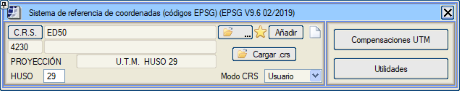
Girdiğimizde karşılaştığımız iletişim kutusu, sırayla şunları yapmamızı sağlar:
Koordinat Referans Sistemi (CRS) [C.R.S.] düğmesine tıklandığında, kullanılan referans sistemini özelleştirmeye veya koordinat referans sistemleri arasında dönüşümler yapmaya olanak tanıyan iletişim kutusuna erişilir.  CRS kutucuğuna tıklandığında menüyü açarız: 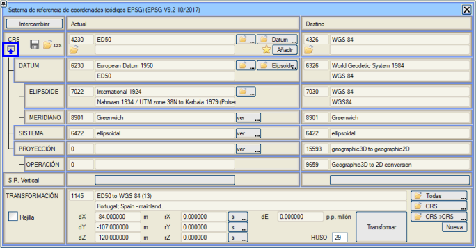
Koordinat referans sistemleri veya CRS (İngilizce Coordinates Reference System'in kısaltması), OGP (International Association of Oil and Gas Producers) tarafından, 2005'e kadar EPSG (European Petroleum Survey Group) olarak bilinen kuruluş tarafından ve daha spesifik olarak, farklı koordinat referans sistemlerinin tüm parametrelerini ve koordinat dönüşümleri için açıklamaları içeren bir veritabanını düzenli olarak güncelleyen ve yayınlayan OGP Surveying and Positioning Committee tarafından standartlaştırılmıştır. Bu veritabanı serbestçe dağıtılabilir ve http://www.epsg.org adresinde mevcuttur. ISTRAM®/ISPOL®, daha sonra açıklanan değişiklikleri yapılandırmak ve gerçekleştirmek için bu veritabanını kullanır (ve periyodik olarak günceller). Programda bulunan ve CRS, Datumlar, Elipsoidler, Meridyenler, Projeksiyonlar, Koordinat Sistemleri ve CRS'ler Arası Dönüşümler veritabanına referans veren son güncelleme, Ocak 2022 tarihli EPSG V10.051'dir. Bir CRS, aşağıdaki şemada gösterildiği gibi bir datum, bir koordinat sistemi türü ve bir projeksiyon türü ile tanımlanır: 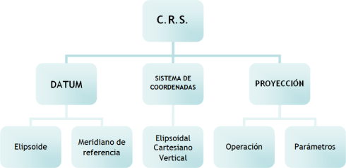
Bir datum, sırayla, bir elipsoid ve bir referans meridyeni ile tanımlanır. Örneğin, ED50 CRS'si, datum olarak European Datum 1950'yi (aynı zamanda CRS'ye adını veren ED50 olarak da adlandırılır) kullanır, elipsoidi Uluslararası 1924 (Hayford 1909 elipsoidi olarak da adlandırılır) ve referans meridyeni Greenwich'tir. Koordinat sistemi ise, küresel (nadiren kullanılır) veya elipsoidal (doğal koordinatlar enlem, boylam ve dikey bir sistem kullanılmıyorsa kot) olabilir. Eğer elipsoidal bir sistem durumunda belirli bir projeksiyon tanımlanırsa (örneğin, UTM için dilim sabitlenerek), o zaman bu bir kartezyen sistemdir (doğal koordinatlar X, Y ve/veya Z'dir). Örneğin, seçilen CRS belirli bir dilim için bir ED50 ise (örneğin, 23030 kodlu ED50 / UTM zone 30N), sistem kartezyen olur. Z koordinatı, bu sistemlerden birine göre veya bağımsız olarak tek boyutlu bir dikey koordinat sistemi aracılığıyla (İspanya'da 2015'ten itibaren kullanımı zorunlu olan European Terrestrial Reference System 1989, ETRS89 durumu) hesaplanabilir. Projeksiyon türü bir işlemden oluşur. Başlıca mevcut işlemler şunlardır:
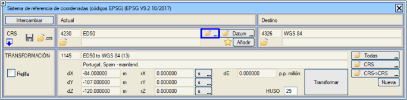
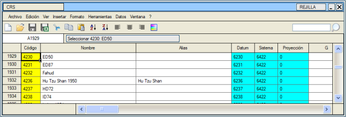
Bu tabloda, ilk sütun CRS'nin kimlik koduna (eski EPSG, şimdiki OGP tarafından belirlenen kodlar), ikinci sütun CRS'nin adına, üçüncü sütun takma adına (yani, CRS'nin bilindiği diğer ad) ve ardından CRS'yi oluşturan datum, koordinat sistemi ve projeksiyon tipinin (OGP'ye göre) kimlik kodları yer alır. Bu tabloda seçmek ve işaretli CRS'yi yüklemek için [Seç: xxxxx] düğmesine basmak gerekir.
Eğer [Datum] düğmesine basılmış olsaydı, o zaman aynı tablo, hemen altında belirtilen datuma sahip tüm CRS'lere göre filtrelenmiş olarak açılırdı. 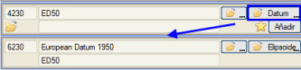
Bir CRS seçip bu tabloyu kapatmak, programın kullanıcı onayı aldıktan sonra CRS'yi değiştirmesi için yeterlidir. Aynı şekilde, datum için [ …] düğmesine basıldığında, mevcut tüm datumları içeren yeni bir tablo açılır. Bu tabloda her biri için OGP'ye göre ilgili kimlik kodları, ad, takma ad ve kullanılan elipsoid ve meridyenin kimlik kodları belirtilir. Yine, birini seçmek, tabloyu kapattıktan ve kullanıcı tarafından onaylandıktan sonra onun belirlenmesi için yeterlidir. 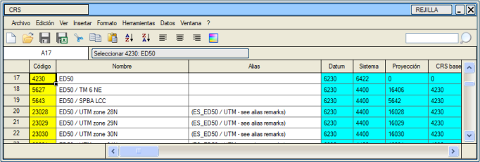
Bu durumda, eğer [Elipsoid] düğmesine basılmış olsaydı, tablo aşağıda belirtilen elipsoidi kullanan tüm datumlara göre filtrelenirdi. Koordinat sistemi, seçilen CRS için kullanılanı gösterir. [Gör] düğmesi, sadece her sistem için OGP kimlik kodlarını içeren tabloyu gösterir, kullanıcının bu veriyi değiştirmesine izin vermez çünkü anlamsızdır. Kullanılan projeksiyon sistemiyle ilgili olarak, [Gör] düğmesi aşağıdaki tabloyu bilgilendirme amaçlı olarak açar: 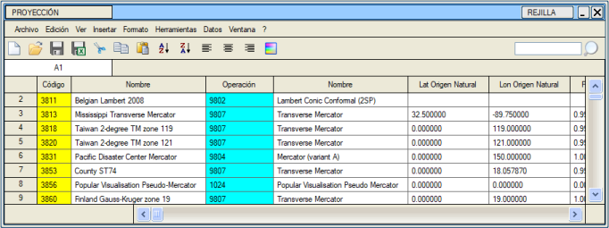
Burada, projeksiyon sistemi için OGP'ye göre kimlik kodu, bu projeksiyon sisteminin adı, sistemin kullandığı işleme karşılık gelen kod ve ad ile onun parametreleri görülebilir. Belirli bir projeksiyonla ilişkilendirilmemiş CRS'ler için, belirtilen dilimde bir UTM projeksiyonu kullanıldığı anlaşılır. Son olarak, datuma geri dönersek, hem elipsoid hem de referans meridyeni seçilebilir. Elipsoide karşılık gelen [ …] düğmesine basıldığında, açılan tablo şudur: 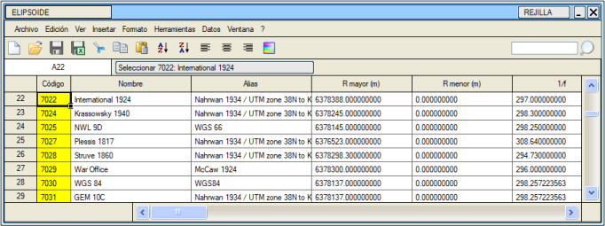
Burada, elipsoidin kimlik kodu (OGP'ye göre), adı ve takma adı, büyük ve küçük yarıçapları ve basıklık katsayısının tersi gösterilir. Birini seçip tabloyu kapattıktan sonra, kullanıcı onayıyla bu, çalışma elipsoidi olacaktır. Meridyen durumunda, [Gör] düğmesine basıldığında, bilgilendirme amaçlı olarak OGP kodu, meridyenin adı ve Greenwich meridyenine göreli boylamı gösterilir. Dolayısıyla, bu iletişim kutusunu kullanarak, çalışılan haritanın CRS'sini belirlemek mümkündür. Bir .edm/.edb dosyasında hem CRS hem de dilim ve koordinat dönüşümü (aşağıda açıklanmıştır) kaydedilir.
CRS'ler Arası Dönüşümler ISTRAM®/ISPOL®, koordinat dönüşümü için Transverse Mercator (UTM ve Gauss-Kruger), oblik stereografik ve Lambert konik 2SP (2 standart paralel, örneğin Fransa'da sıkça kullanılan 2154: RGF93/Lambert-93 kodu) işlemlerini destekler. Başka birini seçmek bir uyarı mesajına neden olacaktır. Bir projeksiyon sistemi için başka bir işleme ihtiyacınız varsa, programlanması için Buhodra Mühendislik A.Ş. ile iletişime geçmekten çekinmeyin. Koordinat dönüşümü, haritayı, topografyayı, görüntüleri ve eğer GÜZERGAH PROJESİ menüsündeyseniz, plan eksenlerini, sınır çizgileri dosyasını, Sanat Yapıları dosyasını (ağız ve çıkış) ve Yarma, Dolgu veya Hendek şevlerinin Tip Kesitlerinin 3B Çizgilerini de etkiler. Ayrıca, Güzergah Projeleri aplikasyon menüsünde yüklenen baz istasyonlarının koordinatlarının dönüşümünü de etkiler. Dönüşüm, jeosentrik koordinatlar arasında gerçekleşir ve aşağıdaki şemayı takip eder: 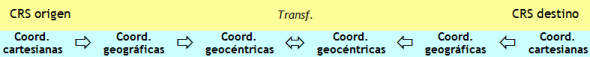
Kartezyen koordinatlardan coğrafi koordinatlara geçiş, sadece CRS'nin doğal koordinat sistemi kartezyen ise gereklidir. Standart bir koordinat dönüşümü gerçekleştirmek için aşağıdaki adımları izlemek gerekir:
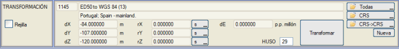
[Değiştir] düğmesi, dönüşümü tersine çevirmeyi sağlar. Bu, örneğin, WGS 84 CRS'sinden ED50'ye geçmek istendiğinde kullanışlıdır. Kullanıcı 1145 kodlu dönüşümü (tersi olan) yükleyecek ve bu düğmeye basacaktır. [Yeni] düğmesi, kullanıcının yerel dönüşüm parametrelerini tanımlamasına olanak tanır, ancak sadece jeosentrik eksenlerin bir ötelemesiyle sınırlıdır (dX, dY, dZ). Google Earth .kml Dosyalarına Dışa Aktarma® bölümünde, bu seçeneğin nasıl kullanılacağı açıklanmaktadır. GRID DOSYALARI İLE DÖNÜŞÜMLER ISTRAM®/ISPOL®, NTV2 formatındaki grid dosyalarını kullanarak CRS'ler arasında bir dönüşüm yapmaya olanak tanır. Program kütüphanesi, dönüşümlerle ilişkili aşağıdaki gridleri içerir:
Grid seçeneği etkinleştirildiğinde, dosyayı seçmeniz istenir ve buradan kaynak ve hedef CRS'lerin adları okunur. [Dönüştür]'e basıldığında, her nokta için enlem ve boylam artışı, onu çevreleyen gridin dört düğümüne bağlı değerlerin çift doğrusal enterpolasyonu ile hesaplanır. 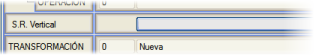 .gsb gridleri sadece X ve Y koordinatlarını etkiler. Ancak, jeoid dalgalanmasından kaynaklanan dikey referans sistemi dönüşümleri için de gridler mevcuttur (jeoidin elipsoid üzerindeki yüksekliğini sağlarlar). Bu dosyaların uzantısı .gzb'dir ve kütüphanede EGM08_REDNAP.gzb (İber Yarımadası için genel), EGM08_REDNAP_Canarial.gzb (Kanarya Adaları için) ve EGM08_cat.gzb (Katalonya bölgesi için) dosyaları bulunur. Kütüphanemizde, NTV2 formatındaki veri gridlerini kullanarak CRS dönüşümü için, İber Yarımadası ve Balear Adaları için IGN tarafından, Katalonya için ise ICC tarafından yayınlanmış dosyalar bulunmaktadır. 2008 ve 2009'da yayınlanan güncel sürümler ve 2003 ve 2005'te yayınlanan ve artık güncelliğini yitirmiş eski sürümler olmak üzere iki sürüm vardır. Kütüphanelerimizden eski sürümü kaldırmıştık; ancak bunları kullanmış olan projeler için, onları daha net bir şekilde tanımlayan dosya adlarıyla yeniden dahil ediyoruz. ESKİLER: peninsula_2003.gsb; INV_peninsula_2003.gsb; baleares_2005.gsb; INV_baleares_2005.gsb GÜNCEL:peninsula_ED50_ETRS89.gsb;peninsula_ETRS89_ED50.gsb;baleares_ED50_ETRS89.gsb; baleares_ETRS89_ED50.gsb; cat_ED50_ETRS89.gsb; cat_ETRS89_ED50.gsb. GOOGLE EARTH .kml DOSYALARINA DIŞA AKTARMA® .kml dosyalarının dışa aktarımı burada açıklanmaktadır. CRS'LER ARASINDA YEREL DÖNÜŞÜMLERİN MANUEL TANIMLANMASI  ISTRAM®/ISPOL®,
kullanıcıların belirli yerel CRS'leri ve CRS'ler arası dönüşümleri tanımlamasına olanak tanır.
Bir kullanıcı dosyasının kullanımı, [Yükle] düğmesi aracılığıyla mümkündür. ISTRAM®/ISPOL®,
kullanıcıların belirli yerel CRS'leri ve CRS'ler arası dönüşümleri tanımlamasına olanak tanır.
Bir kullanıcı dosyasının kullanımı, [Yükle] düğmesi aracılığıyla mümkündür.ISTRAM®/ISPOL® boş olarak başlatıldığında veya önceden tanımlanmış bir CRS olmadan bir dosya yüklendiğinde veya Dosya > Yeni seçeneğiyle, Mevcut CRS bilgisi kaldırılır ve varsayılan bir CRS tanımlanmaz. Bir .crs dosyasından bir CRS veya Dönüşüm yüklendiğinde, dosya adı CRS iletişim kutusunda gösterilir. Bir Mevcut CRS tanımlandıktan sonra, bir .edm dosyası, bir ikili .edb dosyası veya yedek kopyayı kaydedersek, CRS dosyasının adı onlarla birlikte kaydedilir ve dolayısıyla Mevcut CRS ile tanımlanır. Bu şekilde, yeni bir oturum başlatıldığında veya .edm veya .edb dosyası yüklendiğinde, o .crs dosyasında tanımlanan koordinat referans sistemi ayarlanır. Program kütüphanesinde birkaç örnek dosya bulunmaktadır. ElCobre.crs, en basit olanıdır: #----------------------------------------------------
# Yeni bir projeksiyon aracılığıyla bir CRS tanımı. # CRS'nin adı ve projeksiyonun adı ile # parametreleri tanımlanır. # DATUM (ELİPSOİD ve MERİDYEN), SİSTEM ve # İŞLEM veritabanı kodları olmalıdır. # Burada ayrıca hedef CRS ve DİLİM de tanımlanır. #---------------------------------------------------- CRS WGS8 84 / EL COBRE / UTM zone 19S DATUM 6326 (WGS 84) SİSTEM 4400 (Kartezyen) İŞLEM 9807 Transverse Mercator PROJEKSİYON EL COBRE Doğal.Baş.Enl 0.000000000 Doğal.Baş.Boy -70.5000000 Doğ.Baş.Ölçek.F 1.000188147 SağaDeğer 200000.0000 YukarıDeğer 7000000.000 #---------------------------------------------------- CRS_hedef 4326 (WGS 84) DİLİM -19 (19S) #---------------------------------------------------- SON #---------------------------------------------------- Oviedo.crs dosyası da iyi bir kullanım örneğidir, çünkü zaten dönüşüm parametrelerini kullanır (ancak sadece öteleme parametrelerini, bu yüzden üç parametreli bir dönüşümdür): #----------------------------------------------------
# Yeni bir projeksiyon aracılığıyla bir CRS tanımı. # CRS'nin Adı ve projeksiyonun adı ile # parametreleri tanımlanır. # DATUM (ELİPSOİD ve MERİDYEN), SİSTEM ve # İŞLEM veritabanı kodları olmalıdır. # Burada ayrıca hedef CRS ve DİLİM de tanımlanır. # 3 veya 7 parametreli bir dönüşüm de tanımlanabilir. #---------------------------------------------------- CRS ED50 / OVIEDO DATUM 6230 (European Datum 1950) SİSTEM 6422 (elipsoidal) İŞLEM 0 PROJEKSİYON OVIEDO #Doğal.Baş.Enl 0.000000000 #Doğal.Baş.Boy 0.000000000 #Doğ.Baş.Ölçek.F 0.000000000 #SağaDeğer 0.000000000 #YukarıDeğer 0.000000000 #---------------------------------------------------- CRS_hedef 4326 (WGS 84) DİLİM 30 DÖNÜŞÜM ED50'den WGS84'e (Oviedo) dX -141.00000000 m dY -102.00000000 m dZ -165.00000000 m rX 0.00000000 saniye rY 0.00000000 saniye rZ 0.00000000 saniye dE 0.00000000 Milyonda Birim #---------------------------------------------------- SON #---------------------------------------------------- Cat_ED50_WGS84.crs dosyası, yedi parametreli yerel dönüşümler yapmayı sağlar: #----------------------------------------------------
# Yeni bir projeksiyon aracılığıyla bir CRS tanımı. # CRS'nin Adı ve projeksiyonun adı ile # parametreleri tanımlanır. # DATUM (ELİPSOİD ve MERİDYEN), SİSTEM ve # İŞLEM veritabanı kodları olmalıdır. # Burada ayrıca hedef CRS ve DİLİM de tanımlanır. # 3 veya 7 parametreli bir dönüşüm de tanımlanabilir. #---------------------------------------------------- CRS ED50 / KATALONYA DATUM 6230 (European Datum 1950) SİSTEM 6422 (elipsoidal) İŞLEM 0 PROJEKSİYON KATALONYA #Doğal.Baş.Enl 0.000000000 #Doğal.Baş.Boy 0.000000000 #Doğ.Baş.Ölçek.F 0.000000000 #SağaDeğer 0.000000000 #YukarıDeğer 0.000000000 #---------------------------------------------------- CRS_hedef 4326 (WGS 84) DİLİM 31 DÖNÜŞÜM ED50'den WGS84'e (ICC Katalonya) dX -128.14907000 m dY -70.93672000 m dZ -182.41914000 m rX_rad 0.000002632283 radyan rY_rad 0.000002701445 radyan rZ_rad 0.000008649425 radyan dE 11.51502700 Milyonda Birim #---------------------------------------------------- SON #---------------------------------------------------- Cat_ED50_GWS84b.crs dosyası, yedi parametreli bir dönüşümün başka bir örneğidir, ancak bunun özelliği, kaynak CRS'nin manuel olarak tanımlanmak yerine, CRS_KAYNAK komutu kullanılarak mevcut olanlardan birinin kullanılmasıdır: #----------------------------------------------------
# Bir Dönüşümün Tanımı. # CRS kodu tanımlanır. # Burada ayrıca hedef CRS ve DİLİM de tanımlanır. # 3 veya 7 parametreli bir dönüşüm de tanımlanabilir. #---------------------------------------------------- CRS_kaynak 4230 (ED50) CRS_hedef 4326 (WGS 84) DİLİM 31 DÖNÜŞÜM ED50'den WGS84'e (ICC Katalonya) dX -128.14907000 m dY -70.93672000 m dZ -182.41914000 m rX_rad 0.000002632283 radyan rY_rad 0.000002701445 radyan rZ_rad 0.000008649425 radyan dE 11.51502700 Milyonda Birim #---------------------------------------------------- SON #---------------------------------------------------- N_Algerie_Clarke_WGS84.crs dosyası, Cezayir'in kuzeyi için bir Lambert Konik Konformal (2SP) projeksiyonlu bir CRS ve bu CRS'den 32. dilimdeki WGS84'e bir dönüşüm tanımlar: #----------------------------------------------------
# CRS: Clarke Kuzey Cezayir #---------------------------------------------------- CRS CLARKE Kuzey Cezayir DATUM 6671 (Voirol 1879) SİSTEM 4499 (Kartezyen) İŞLEM 9802 Lambert Konik Konformal (2SP) PROJEKSİYON Kuzey Cezayir Sahte.Baş.Enl 36.000000000 Sahte.Baş.Boy 2.700000000 İlk.SP.Enl 37.566182509 İkinci.SP.Enl 34.423190119 Sahte.Doğu.Baş 500135.00000 Sahte.Kuzey.Baş 300090.00000 #---------------------------------------------------- CRS_hedef 4326 (WGS 84) DİLİM 32 (32N) #---------------------------------------------------- DÖNÜŞÜM CLARKE Kuzey Cezayir'den WGS84'e dX -156.0000000 m dY -94.0000000 m dZ 311.0000000 m rX 0.0000000 s rY 0.0000000 s rZ 0.8140000 s dE -6.0000000 Milyonda Birim #---------------------------------------------------- SON #---------------------------------------------------- LTM_Chile(-71).crs dosyası, Şili'de kullanılan Yerel Transverse Mercator projeksiyonunu aşağıdaki parametrelerle içerir: #----------------------------------------------------
# Yeni bir projeksiyon aracılığıyla bir CRS tanımı. # CRS'nin Adı ve projeksiyonun adı ile # parametreleri tanımlanır. # DATUM (ELİPSOİD ve MERİDYEN), SİSTEM ve # İŞLEM veritabanı kodları olmalıdır. # Burada ayrıca hedef CRS ve DİLİM de tanımlanır. #---------------------------------------------------- CRS WGS8 84 / LTM_CHILE / UTM zone 19S DATUM 6326 (WGS 84) SİSTEM 4400 (Kartezyen) İŞLEM 9807 Transverse Mercator PROJEKSİYON LTM CHILE (-71) Doğal.Baş.Enl 0.000000000 Doğal.Baş.Boy -71.0000000 Doğ.Baş.Ölçek.F 1.000047037 SağaDeğer 200000.0000 YukarıDeğer 7000000.000 #---------------------------------------------------- CRS_hedef 4326 (WGS 84) DİLİM -19 (19S) #---------------------------------------------------- SON #---------------------------------------------------- ISPOL kütüphanesinde bulunan diğer yerel CRS'lerden biri de, İngiltere'deki haritaları bu iki sistem arasında dönüştürmek için kullanılan OSGB36_to_WGS84(6).crs dosyasıdır. EPSG 1314 dönüşümü yerine bu dosya kullanılmalıdır, çünkü bu dönüşüm, EPSG veritabanında kullanılan kaynak CRS'nin projeksiyonu eksik olduğu için düzgün çalışmaz. Ayrıca, bazı parametreleri (Sahte Doğu Başlangıcı ve Sahte Kuzey Başlangıcı) fit (US_Feet) cinsinden tanımlama imkanı sunan Texas_Central_Lambert2SP.crs dosyasına da sahip olacaksınız. S-JTSK(EN)_Zvolen.crs dosyası, CRS (5221) S-JTSK(Ferro)/Krovak East North'tan (4326) WGS84'e dönüşüm yapmayı sağlar. Bu CRS, Zvolen (Slovakya) bölgesine karşılık gelir.  Kütüphanede, örneğin Sırbistan'ın belirli bir bölgesi için MGI_Balkans_Zone_7_a_WGS84.crs veya Bolivya'nın geniş bir bölgesi için Bolivia_Lambert.crs veya Ekvador'da kullanılan, WGS84 Datumuna dayalı ve Quito (TMQ) için değiştirilmiş bir UTM projeksiyon sistemine sahip bir CRS tanımlayan SIRES-DMQ.crs gibi daha fazla .crs dosyası mevcuttur. Özetle, bu tür dosyalarda şunlar tanımlanır:
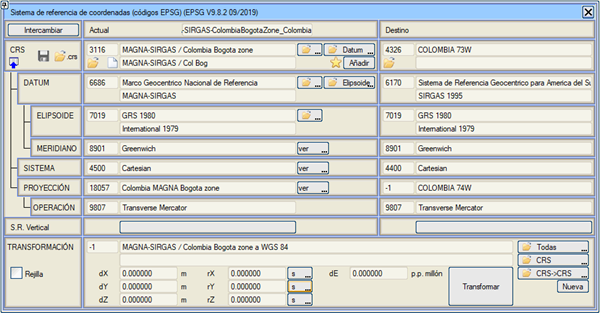 Ayrıca bu sistemden WGS84'e dönüşüm sağlayan bir başkasına da sahibiz:
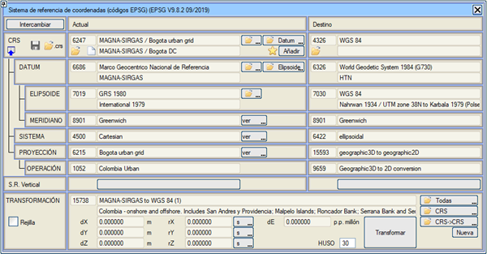 3D Helmert Düzeltmesi ile Gerçek Zamanlı CRS'ler Arası DönüşümGPS koordinat takibi aracı, CRS değişikliğini ve varsa tanımlanmış bir 3D Helmert koordinat dönüşümünü aynı anda kullanır. Örnek ED50 CRS'sinde referanslandırılmış bir harita olduğunu ve CRS'ler arası dönüşümler iletişim kutusunda mevcut CRS olarak ED50 ve hedef olarak WGS84 göründüğünü varsayalım. Aynı şekilde, CRS değişikliği için 3 veya 7 parametreli bir dönüşüm tanımlanmıştır. Aynı anda, Araçlar → Koordinat Dönüşümü iletişim kutusunda, önceki CRS dönüşümü ile ED50'ye çevrilmiş GPS okumalarına ve bu baz istasyonlarının ED50'deki gerçek koordinatlarına sahip bir dizi baz istasyonundan statik veya dinamik bir 3D Helmert dönüşümü tanımlanmıştır. GPS bağlandığında, elde edilen okumalar önce CRS dönüşümü kullanılarak WGS84'ten ED50'ye çevrilir ve elde edilen koordinatlar daha sonra 3D Helmert koordinat dönüşümü ile ayarlanır. Eğer GPS deniz seviyesinden yüksekliği döndürmezse, hedef CRS (WGS84) ile düzenli bir grid içeren bir dikey referans sistemi yüklenebilir. Yardımcı Araçlar Dilim Değişikliği Mantıksal olarak, dilim
değişiklikleri sadece projeksiyon sistemi olarak UTM kullanan
CRS'ler için anlamlıdır, çünkü Transverse Mercator (Gauss-Kruger) veya Oblique
Stereographic gibi diğer projeksiyon türleri her özel durumda kendi doğal başlangıç noktalarını tanımlar.Bir dilim değişikliği yapmak için, Ayarlar → Koordinat Referans Sistemi menüsünden ve ayrıca alt kısımdaki DİLİM simgesinden seçeneğe erişmek gerekir. Tüm bunlar Yardımcı Araçlar bölümündedir. 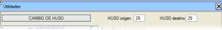O zaman sadece kaynak dilimi ve hedef dilimi belirtmek ve ardından [DİLİM DEĞİŞTİR] düğmesine basmak, programın koordinat dönüşümünü yürütmesi için yeterlidir. Değişiklik, hem harita, hem topografya, hem eksenler hem de yüklenen görüntüler üzerinde etkili olur. UTM'den Coğrafi Koordinatlara ve Tersi Bu araç, UTM koordinatlarını (kaynak dilim) coğrafi koordinatlara ve coğrafi koordinatları UTM'ye (hedef dilim) dönüştürmeyi sağlar. Coğrafi koordinatlardayken koordinat yansımasında enlem ve boylam gösterilir, örn. -6/20/15.2346 +42/55/10.1234. Coğrafi koordinatlarda, .edm (ve .top/.toc) dosyasında saklanan ve ölçümler için kullanılan koordinatların sırası saniyenin 1/20'sidir; bu birim metreye çok yakındır ve çok fazla bozulma olmadan 3B görünümler yapmaya olanak tanır. Eğer bir .edm dosyası coğrafi koordinatlardayken yazılırsa, program onu tekrar yüklediğinde tanıyacaktır, ancak UTM ve Coğrafi koordinatlardaki dosyaları birlikte yüklememelisiniz. Ölçekle çalışırken veya ölçeği değiştirirken, anlamı şöyledir, örn.: ÖLÇEK 1:1000 → 1 metre kağıt, 1000 × (1/20 saniye) temsil eder → 1 metre → 50 saniye. Coğrafi Koordinatları İçe Aktarma [COĞRAFİ KOORDİNATLARI YÜKLE] düğmesi, coğrafi koordinatlardaki noktaları içeren ve ayrıca aplikasyon baz istasyonlarıyla ilişkilendirilebilen dosyaları yüklemeyi sağlar. Dosya seçildikten sonra, verilerin Doğu veya Batı boylamına göre mi olduğunu belirtmeniz gereken bir iletişim kutusu gösterilir, böylece ikinci durumda, program verilerin işaretini değiştirir: 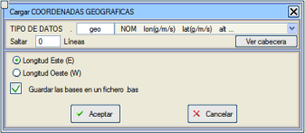
Coğrafi koordinat dosyaları herhangi bir uzantıya sahip olabilir (varsayılan olarak program .geo'yu önerir) ve aşağıdaki formatlar kabul edilir:
Yüklenebilecek başka bir olası format şudur: (K/G)Enlem(d) (D/B)Boylam(d). örn:
G25.38557 B57.12265 G25.38999 B57.06684 G25.38042 B56.98954 G25.39120 B56.96494 Bu dosyayı yüklemeden önce, bu verileri UTM'ye dönüştürmek için uygun mevcut CRS'yi ve Dilimi seçtiğimizden emin olmalıyız. Bu kutucuk ayrıca, eksen aplikasyonu için bir .bas baz istasyonu dosyası oluşturma seçeneği de sunar. Coğrafi koordinatlardaki noktaları içe aktarırken, aşağıdaki hususları göz önünde bulundurmak gerekir:
Jeosentrik Koordinatlardan Mevcut CRS Projeksiyon Sistemine Geçiş 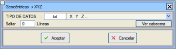[Jeosentrik -> XYZ] düğmesi, jeosentrik koordinatların, mevcut olarak tanımlanmış CRS'nin projeksiyon sistemindeki koordinatlara dönüştürülmesini sağlayan bir iletişim kutusu açar. Dönüşüm, ayarlanmış olan kaynak diliminde gerçekleştirilir. Atla alanında, dosyanın başında göz ardı edilecek ve genellikle başlığa karşılık gelen satır sayısını belirtebilirsiniz. Bunu kolaylaştırmak için, [Başlığı Gör] düğmesi, dosyanın ilk birkaç satırını görüntülemenizi sağlar, bu da geleneksel bir metin düzenleyiciyle açılması zor olan çok büyük dosyalarda çok kullanışlıdır. Çıktı dosyası, üç sütunlu (X, Y ve Z), .xyz uzantılı ve kullanıcının belirttiği ada sahip bir ASCII dosyası olacaktır. Coğrafi Koordinatları Listele Aktif elemanların (çizgiler, noktalar, metinler) tüm noktalarını içeren, coğrafi koordinatlarda ve şu formatta bir geo.res listesi oluşturur: enlem boylam yükseklik. Enlem ve boylam ondalık olarak altmışlık derecelerle. Coğrafi Koordinatları Yükle seçeneği için, önceki araçla oluşturulan format girdi formatı olarak eklenir. Bu listeye elemanlarla ilgili ek bilgiler eklenir: Çizgi noktaları durumunda: L<çizgi tipi> , Çizgi numarası , Nokta numarası. Tekil Nokta Sembolleri durumunda: S<nokta tipi>, Nokta numarası, Öznitelik (bir nokta numarası olabilir, km, vb.). Bir metin durumunda: R<metin stili> , Metin numarası, Metin. Coğrafiden XY'ye Harita coğrafi koordinatlardayken, yani X'ler ondalık olarak altmışlık derecelerle Boylamlar ve Y'ler ondalık olarak altmışlık derecelerle Enlemler olduğunda, o zaman tüm koordinatların aralık içinde olduğu (-180 < X < 180) ve (-90 < Y < 90) ve geçerli bir CRS ayarlandığı kontrol edilir. Onaylandığında, dönüşüm gerçekleştirilir. UTM Dengelemeleri  Alım Hesaplamaları için Dengelemeler 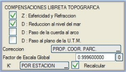Aşağıdakiler arasından kullanılmak istenenler seçilmelidir:
Genel ölçek faktörü sayısal olarak tanımlanır. Bitişikteki [0] düğmesi değerini 0.9996000 olarak başlatır. K’, koordinatlara ve tanımlanmış dilime bağlı olarak aşağıdaki olasılıklardan otomatik olarak hesaplanır:
Aplikasyon Noktaları için Düzeltmeler 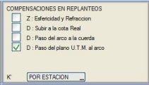 NOKTA APLİKASYONU'nda (GÜZERGAH PROJESİ modülü) U.T.M. seçeneği etkinleştirildiğinde, program parametre tablolarını analiz eder:
Anamorfoz düzeltmesi: K = Genel Ölçek Faktörü × K' olmak üzere: Bir noktaya olan mesafe Dp = Trigonometrik Mesafe / K Uzun görüşler için formüller Çok uzun veya çok eğimli görüşlerle veya yüksek kotlarda çalışılması durumunda daha hassas bir formülasyonu etkinleştirme imkanı sunar. Uzun görüşler için formülasyon etkinleştirildiğinde, küreviyet ve kırılma düzeltmeleri ile deniz seviyesine indirgeme (veya elipsoid kirişine geçiş) düzeltmeleri birlikte etkinleştirilir. Öntanımlı Mod Başlangıçtaki CRS seçim penceresi varsayılan olarak Kullanıcı modunda başlar, ancak açılır listeden seçerek aracı Öntanımlı moduna alabiliriz. [Öntanımlılar] modunda çalışmak için, [Elipsoidal] sistem yerine [Kartezyen] sistemdeki CRS'leri kullanmanız önerilir. Örneğin: ED50 Dilim 29'da Haritamız varsa, 29 dilimli CRS 4230 (ED50) yerine CRS: 23029 (ED50 / UTM zone 29N) kullanmalıyız. Eğer Öntanımlı Mod'daysak, bir veya daha fazla edm/edb dosyası yüklediğimizde:
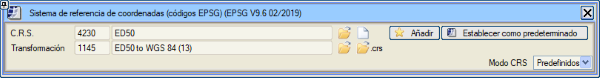
Bu moddan, favoriler listesinden bir CRS yükleyebilir veya [Daha Fazla...]'yı açarak EPSG'nin tam listesinden yükleyebiliriz. Mevcut CRS'yi [Ekle] düğmesiyle favoriler listesine ekleyebilir veya mevcut CRS'yi [Varsayılan Olarak Ayarla]yabiliriz, böylece yeni bir proje başlattığımızda yüklenir. Seçilen CRS modu (kullanıcı veya öntanımlılar) Istram yapılandırma dosyasında kaydedilir ve ayrıca kaydettiğimiz topografik dosyalarda da saklanır ( .ttg, .toc, .top dosyaları...). Bu dosyaları açtığımızda, eğer tanımlanmış bir varsayılan CRS'miz yoksa, program (izinle) dosyada saklanan CRS'yi alacaktır. Eğer zaten bir tane tanımlamışsak, dosyada kaydedilen koordinatları otomatik olarak kullandığımız sisteme dönüştürecektir. Ayrıca, EPSG listesinden veya bir .crs dosyasından bir dönüşüm de yükleyebiliriz. |
||||||||||||||||||||||||||||||||||||||||||||||||||
 ,
,  ,
,  erişmek.
Yeni bir CRS seçildiğinde, eğer ilişkili bir dönüşümü yoksa,
temel CRS'sine bağlı bir dönüşüm aranır.
erişmek.
Yeni bir CRS seçildiğinde, eğer ilişkili bir dönüşümü yoksa,
temel CRS'sine bağlı bir dönüşüm aranır. kullanıcı modunda, mevcut veya kaynak CRS'yi kaldırır. Öntanımlı modda
varsayılan CRS'yi alır. Her iki durumda da yüklü bilgilerle (harita, ttp'ler,
vb.) herhangi bir dönüşüm gerçekleştirmez.
kullanıcı modunda, mevcut veya kaynak CRS'yi kaldırır. Öntanımlı modda
varsayılan CRS'yi alır. Her iki durumda da yüklü bilgilerle (harita, ttp'ler,
vb.) herhangi bir dönüşüm gerçekleştirmez.